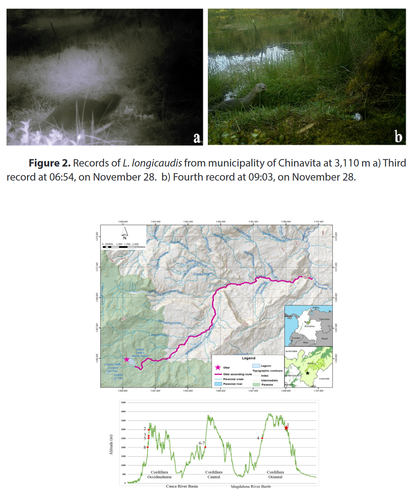

Andrade-Ponce, G.P & Angarita-Sierra, T. (2017). Notable altitudinal range expansion of Lontra longicaudis (Carnivora: Mustelidae) in Colombia

La nutria neotropical Lontra longicaudis es un carnívoro, que se distribuye desde México hasta el norte del Argentina, entre 0 y 3,885 m sobre el nivel del mar. En Colombia la especie es considerada como prioridad de investigación debido al escaso conocimiento sobre ecología y distribución. Con el fin de contribuir al conocimiento sobre L. longicaudis en Colombia, esta nota presenta un nuevo registro altitudinal de la especie para el Páramo de Mamapacha en Boyacá, Colombia. Se realizó un estudio de fototrampeo entre el 18 de Noviembre al 7 de Diciembre del 2015 en el departamento de Boyacá en la Cordillera Oriental en Colombia. Adicionalmente, se realizó una búsqueda de especímenes preservados y registros en publicaciones científicas de L. longicaudis, considerando registros por encima de los 2,000 m sobre el nivel del mar. De un total de 275 imágenes de fauna obtenidas, se registraron cuatro de L. longicaudis para la Laguna de Mundo nuevo en el municipio de Chinvita a 3,110 m sobre el nivel del mar. Los registros encontrados en la revisión de literatura y ejemplares de museos, no superan los 3,000 m de altitud y en su mayoría proceden de la cordillera occidental, lo que confirma que nuestro registro representa una expansión en la distribución altitudinal y el registro más alto para la especie en Colombia. Este registro puede deberse a la abundante fuente de alimento que representa la Trucha Arcoiris (Oncorhynchus mykiss). Debido a que la trucha es un recurso que genera competencia directa entre la nutria y la población humana es necesario implementar planes de manejo del recurso pesquero con el fin de mitigar el conflicto nutria-humano y asegurar la viabilidad poblacional de la especie en el área.
The neotropical otter Lontra longicaudis is a carnivore that ranges from Mexico to northern of Argentina, from 0 to 3,885 m above the sea level. In Colombia, this mammal is considered a research priority due the poor information about its distribution and basic ecology. The aim of this note is to contribute to the knowledge of the altitudinal distribution of L. longicaudis in the Mamapacha Paramos, Boyacá, Colombia. Camera trap fieldwork was carried out from November 18th to December 7th of 2015 in the department of Boyacá on the Cordillera Oriental, Colombia. Additionally, we reviewed preserved specimens and historical records of sightings above 2000 m in several scientific publications on L. longicaudis. Of the 275 images of wildlife, four images corresponded to L. longicaudis at the Mundo Nuevo lagoon, municipality of Chinavita (3,110 m above sea level). After the literature and museum specimens review, we found that there were no records of L. longicaudis in Colombia that exceeded 3,000 m above sea level. Therefore, our record represents a notable altitudinal range expansion of L. longicaudis and a new altitudinal level record for the species in Colombia. This record can be a consequence of the abundant food supply provided by the Rainbow trout (Oncorhynchus mykiss). Due to the competition between otters and local people by the trout, it is necessary to implement management plans of fish resources in order to mitigate human-otter conflict and to ensure the population viability at Mundo Nuevo Lagon